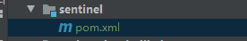
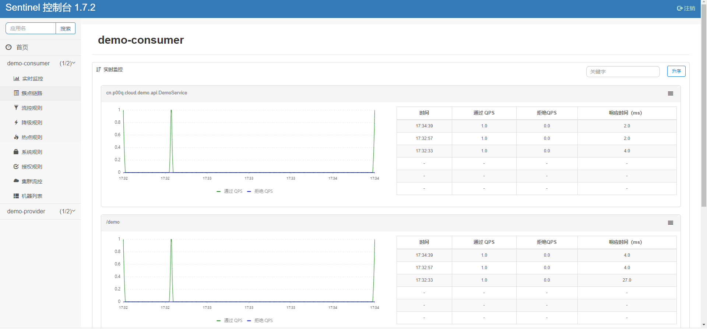

整合服务治理Alibaba Sentinel+Dubbo
- 作者:
- 淡白
- 创建时间：
- 2020-06-08 15:35:07
- Spring Cloud Alibaba nacos dubbo Sentinel
摘要：Sentinel是一个面向分布式服务架构的流量控制组件，可以帮助保障微服务的稳定性。它提供了流量控制、熔断降级、系统自适应保护等多个功能。安装Sentinel可以通过在GitHub下载相应版本的jar包，并将其放入一个新建的sentinel目录，然后通过运行启动文件run.sh来启动Sentinel。登录Sentinel控制台可以通过访问http://IP:8091，并使用默认的用户名和密码sentinel进行登录。 接下来，可以将Sentinel整合到Dubbo服务中。首先，在一个新建的POM项目中添加相关依赖，包括spring-cloud-starter-alibaba-sentinel和sentinel-apache-dubbo-adapter。消费者和提供者都需要依赖sentinel项目。然后，在配置中心中添加相关配置，包括设置服务器端口号、是否饥饿加载以及Sentinel控制台地址。最后，访问http://127.0.0.1:8001/demo，并查看Sentinel控制台上的相关信息。 整合Sentinel可以帮助保障微服务的稳定性，提供流量控制和熔断降级等功能，通过上述步骤可以完成Sentinel的安装和配置。
Sentinel
随着微服务的流行，服务和服务之间的稳定性变得越来越重要。Sentinel 是面向分布式服务架构的流量控制组件，主要以流量为切入点，从流量控制、熔断降级、系统自适应保护等多个维度来帮助您保障微服务的稳定性。 Sentinel 官网
安装Sentinel
Github下载 版本:sentinel-dashboard-1.7.2.jar
新建一个sentinel目录 把jar放入 新建启动文件 run.sh
nohup java -Dserver.port=8091 -Dproject.name=sentinel-dashboard -jar sentinel.jar
登录 http://IP:8091 默认用户名密码:sentinel
整合Dubbo
接着上一篇的服务整合
新建一个POM项目
sentinel

pom
<?xml version="1.0" encoding="UTF-8"?>
<project xmlns="http://maven.apache.org/POM/4.0.0"
xmlns:xsi="http://www.w3.org/2001/XMLSchema-instance"
xsi:schemaLocation="http://maven.apache.org/POM/4.0.0 http://maven.apache.org/xsd/maven-4.0.0.xsd">
<parent>
<artifactId>spring-cloud-alibaba-parent</artifactId>
<groupId>cn.p00q</groupId>
<version>1.0.0-SNAPSHOT</version>
</parent>
<modelVersion>4.0.0</modelVersion>
<artifactId>sentinel</artifactId>
<dependencies>
<dependency>
<groupId>com.alibaba.cloud</groupId>
<artifactId>spring-cloud-starter-alibaba-sentinel</artifactId>
</dependency>
<dependency>
<groupId>com.alibaba.csp</groupId>
<artifactId>sentinel-apache-dubbo-adapter</artifactId>
</dependency>
</dependencies>
</project>
依赖和配置
消费者和提供者都依赖sentinel项目
<dependency>
<groupId>cn.p00q</groupId>
<artifactId>sentinel</artifactId>
<version>${parent.version}</version>
</dependency>
在配置中心添加配置
server:
port: 8001
spring:
cloud:
sentinel:
eager: true # 是否饥饿加载。默认为 false 关闭
transport:
dashboard: 127.0.0.1:8091 # Sentinel 控制台地址
控制台
访问http://127.0.0.1:8001/demo 然后看控制台 